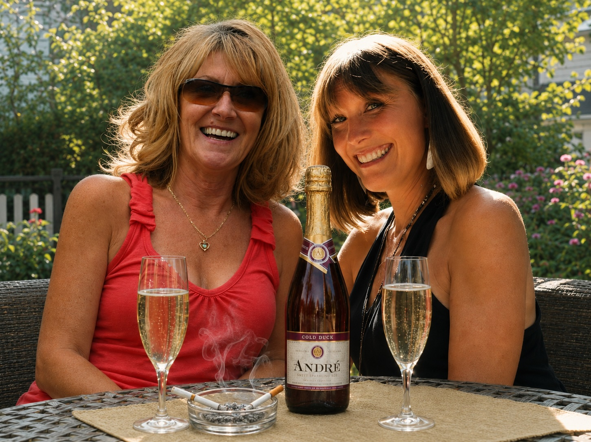

Wochenenden in San Jose.
1984–1986
Im Sommer zog es uns oft nach San Jose. Meist dann, wenn der Nebel wieder einmal den Sunset District verschluckt hatte. Freitagabend wurde rasch gepackt und losgefahren. Der Weg war immer derselbe. Hoch zum Sunset Boulevard, am Lake Merced vorbei, entlang der San Francisco State University und des Brotherhood Way mit seinen endlos vielen Kirchen. Dann auf die Interstate 280.
Die 280, auch Junipero-Serra-Highway genannt, ist nach Peter Junipero Serra benannt, dem Gründer der kalifornischen Missionen. Sie folgt über weite Strecken dem San-Andreas-Graben. Sie führt durch die bewaldeten Hügel der Küstenkette hinunter nach San Jose, dem südlichen Ende des Silicon Valley. Damals war das Valley noch nicht die Heimat von Milliardären und Tech-Giganten. Bis in die fünfziger Jahre standen dort hauptsächlich Obstbäume. Heute geht eine Stadt praktisch nahtlos in die nächste über. Je weiter wir nach Süden kamen, desto wärmer wurde es. Den Nebel ließen wir hinter uns. Oft wurde es unterwegs sogar so heiß, dass wir die Klimaanlage einschalten mussten. Dann ging es - meist im Stau - über die 101 hinauf zum Kuykendall Place. Das Wochenende konnte beginnen!.

Hinter dem Haus auf der Terrasse konnte man gemütlich sitzen. Es war angenehm warm und trocken. Ulli und Hilde ließen es sich gut gehen. Bei Zigaretten und Cold Duck tauschten sie sich aus und hatten Spaß zusammen. Es war ihr festes Freitagsritual. Zu Cold Duck muss man wissen: Das war amerikanischer Schaumwein der unteren bis mittleren Preisklasse. So etwas wie Rotkäppchen-Sekt auf amerikanisch. Heute würden wir ihn vermutlich nicht mehr trinken. Damals mochten wir ihn. Besonders die beiden.
Langsam neigte sich der Nachmittag dem Ende entgegen. Leicht beschwingt bereiteten wir das Abendessen vor. Die Steaks waren legendär. USDA Choice. Fleisch von freilebenden Prärie-Kühen. Dazu gab es Gemüse oder Artischocken oder....Richtig gutes Zeug, alles in der Umgebung angepflanzt.
Dazu tranken wir kalifornischen Wein. Damit gelangen die Steaks ganz besonders gut....Die kalifornische Weinindustrie steckte damals noch in den Kinderschuhen. Wein war etwas für Liebhaber und erstaunlich preiswert. Für weniger als zehn Dollar bekam man hervorragende Flaschen. Wir mochten besonders Cabernet Sauvignon und Zinfandel, die kalifornische Ur-Rebe. Man sagt, sie sei mit dem italienischen Primitivo verwandt.
Heute ist vieles anders. Die Großverdiener des Silicon Valley haben wenig Ahnung von Wein, trinken aber alles und zahlen jeden Preis. Die Folge: Für Flaschen, die früher niemand beachtet hätte, werden inzwischen Summen verlangt, über die wir damals nur gelacht hätten. Fünfzog Dollar für eine mittelmäßige Flasche Wein. Da sage ich mit Obelix: "die spinnen, die Amis."
Besonders gern besuchten wir die kleinen Weinfeste in Orten wie Saratoga, Palo Alto oder Gilroy. Oft waren sie mit Kunstmärkten verbunden. Diese Feste hatten Stil. Bis heute erinnere ich mich an den Geruch. Warme kalifornische Nachmittagssonne, Knoblauch, Kiefernharz und verbranntes Gras. Herrlich.
Am Sonntagnachmittag fuhren wir zurück nach San Francisco. Je näher wir der Stadt auf der 280 kamen, desto kühler wurde es. Schon aus der Ferne konnte man sehen, wie der Nebel die Küstenberge hinaufkroch und ins Tal überschwappte. Langsam, aber unaufhaltsam. Wie Milch, die aus einem kochenden Topf überschäumt. Wir hassten diesen Anblick. Denn wir wussten, was uns erwartete. Nebel. Kälte.
Und die Heizung.